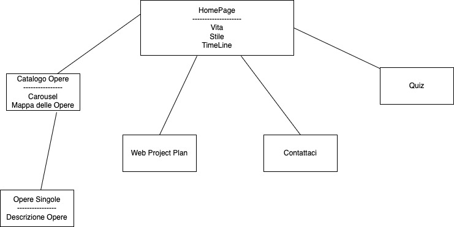
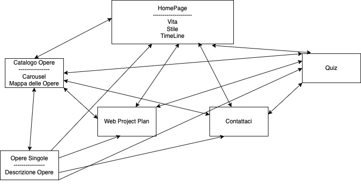
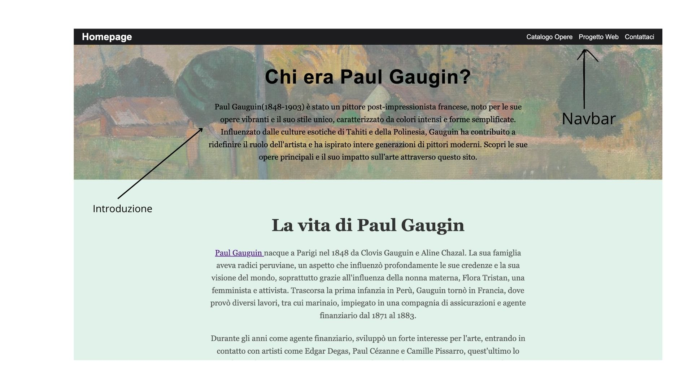
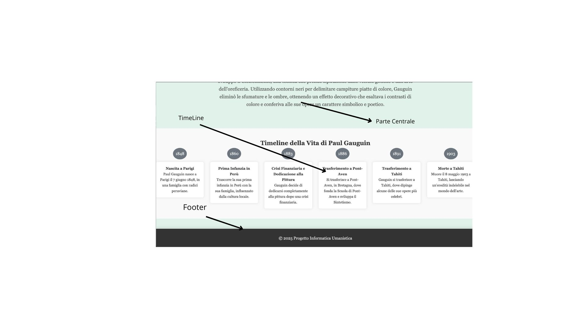

Web Project Plan
1. Brief
Finalità
Il progetto ha lo scopo di offrire una risorsa digitale informativa su Paul Gauguin, fornendo una panoramica sulla sua vita, opere e stile artistico. L’obiettivo è creare un sito accessibile e strutturato per la consultazione e l’approfondimento.
Pubblico
Il target comprende studenti, studiosi, appassionati d’arte e curiosi. L’accesso è libero e non richiede registrazione. Gli utenti possono navigare tra le sezioni, esplorare le opere e consultare approfondimenti.
Accesso
Il sito utilizza testo, immagini e mappe interattive. Il design è ottimizzato per desktop, tablet e smartphone, garantendo un'esperienza fluida su tutti i dispositivi.
Contenuti e dati
I contenuti provengono da fonti autorevoli reperite online.
2. Benchmark
Analisi di mercato
Esistono diversi siti dedicati a Paul Gauguin, ma pochi offrono un'esperienza interattiva completa con mappe, gallerie visive dettagliate e metadati strutturati. Il nostro progetto si propone di colmare questa lacuna, offrendo un'esperienza ottimizzata per la consultazione accademica e per il pubblico generico interessato all’arte.
Analisi di siti concorrenti
Finestre sull’Arte - Paul Gauguin
Finestre sull’Arte fornisce una panoramica approfondita sulla vita e lo stile pittorico di Gauguin, con descrizioni dettagliate delle sue opere principali.
- Punti di forza: Contenuti ben curati, ricchezza di informazioni storiche e artistiche.
- Limitazioni: Mancanza di un'esperienza interattiva e di strumenti avanzati per l'esplorazione delle opere.
Tate - Paul Gauguin
Tate presenta un archivio delle opere di Gauguin conservate nella propria collezione, con analisi critiche e approfondimenti sul suo contributo all’arte moderna.
- Punti di forza: Qualità delle immagini e autorevolezza delle fonti.
- Limitazioni: Navigazione statica, assenza di strumenti per esplorare le opere al di fuori della collezione Tate.
Valore aggiunto del nostro progetto
- Mappa interattiva: Permette di visualizzare la posizione delle opere di Gauguin nel mondo.
- Sistema di paginazione: Facilita la consultazione delle immagini con una navigazione più fluida.
- Pagine dedicate per ogni opera: Informazioni dettagliate e immagini in alta qualità.
- Quiz: Pagina dinamica dedicata ad un Quiz su Gaugin
3. Struttura
Mappa Concettuale
La mappa concettuale rappresenta la struttura e le connessioni tra le diverse sezioni del sito, aiutando a visualizzare la disposizione logica dei contenuti.
Schema delle Dipendenze
Lo schema delle dipendenze mostra come le diverse pagine e risorse sono collegate tra loro, evidenziando la navigazione tra le varie sezioni del sito.
4. Layout
Layout della HomePage
Il layout della HomePage è progettato per garantire una navigazione intuitiva e fluida. La struttura è suddivisa in sezioni chiare, partendo dall'alto verso il basso troviamo: la barra di navigazione, un'area di introduzione con un'opera di Gaugin in background per dare un maggiore senso di divisione del Layout, un'area centrale per i contenuti principali, la timeline della vita di Gaugin e infine il Footer.
 5. Usabilità
Architettura
L'architettura del sito è pensata per offrire una navigazione intuitiva e fluida. Le sezioni principali (biografia, opere, mappa) sono facilmente accessibili tramite la barra di navigazione. Inoltre, è stata creata una nuova sezione "Contattaci", che consente agli utenti di inviare un messaggio al creatore del sito. Ogni pagina è progettata per essere visivamente chiara, con spazi ben definiti tra i vari contenuti, riducendo al minimo il disordine. La mappa interattiva è ben integrata, facilitando l'esplorazione geografica delle opere. La paginazione nelle gallerie permette agli utenti di scorrere le immagini con facilità.
Aspetto e tipografia
Il sito utilizza uno stile sobrio ed elegante, con testi facilmente leggibili grazie a un buon contrasto con lo sfondo. I titoli sono in grassetto per facilitare la distinzione tra le sezioni, mentre il corpo del testo è chiaro e leggibile. Le componenti di interfaccia, come i pulsanti e i link, sono ben visibili, con un feedback visivo che segnala l'interazione.
Colori, icone e font
Il sito utilizza una selezione di colori semplici e sofisticati, scelti per garantire un'esperienza visiva piacevole. I font sono leggibili, con una scelta che favorisce una lettura comoda su tutti i dispositivi.
6. Servizi
Sistemi di browsing aggiuntivi
Oltre ai canali di navigazione tradizionali (menu, barra laterale e ricerca), si potrebbero immaginare i seguenti sistemi di browsing aggiuntivi:
- Browsing per mappa interattiva: Gli utenti potrebbero navigare tra le opere di Gauguin visualizzando una mappa geografica. Ogni punto sulla mappa rappresenterebbe una località significativa per l'artista, con le relative opere esposte in quel luogo.
- Navigazione per temi o periodi storici: Un sistema che permette agli utenti di esplorare le opere in base ai temi trattati (come il colonialismo, la natura, la religione) o ai periodi storici (ad esempio, la fase francese, la fase tahitiana).
- Browsing per popolarità: Un sistema che permette di navigare tra le opere più visitate o apprezzate dagli utenti, incoraggiando l’esplorazione delle opere più popolari.
Utilities e tools per l’interazione
Per migliorare l’interazione e l’esperienza dell’utente, si potrebbero implementare i seguenti strumenti:
- Sistema di commenti e discussione: Ogni opera avrà una sezione dedicata ai commenti, dove gli utenti possono lasciare opinioni, domande o riflessioni.
- Filtri di ricerca avanzata: Un tool di ricerca che permette di filtrare le opere in base a criteri specifici come periodo storico, dimensioni, tecnica, ecc.
- Notifiche push: Un sistema che invia notifiche agli utenti quando ci sono nuovi contenuti o eventi legati a Paul Gauguin.
- Condivisione sociale: Ogni pagina di un'opera avrà dei pulsanti per la condivisione sui social media, come Facebook, Twitter e Instagram.
- Modalità di accessibilità per disabili: Un tool che consente agli utenti con disabilità di navigare più facilmente, come un lettore di schermo, opzioni di aumento del contrasto e ingrandimento del testo.
Altri strumenti, servizi, tool e metodi per valorizzare l'accesso utente
Per valorizzare ulteriormente l'accesso utente, si potrebbero implementare i seguenti strumenti e servizi:
- Assistenza vocale tramite Alexa/Google Assistant: Gli utenti potrebbero interagire con il sito tramite comandi vocali per esplorare le opere.
- Collaborazione con musei: Il sito potrebbe collaborare con musei che espongono opere di Gauguin, offrendo agli utenti informazioni sugli eventi e le mostre temporanee legate all’artista.
7. Bibliografia
Testi
- "Paul Gauguin: Life and Works of the Artist Between France and Tahiti" – Finestre sull'Arte
Questa fonte fornisce una panoramica completa della vita e delle opere di Gauguin, analizzando il suo stile pittorico e il periodo trascorso a Tahiti. - "Paul Gauguin: Vita, stile e opere" – Studenti.it
Un'analisi sintetica sulla biografia e le principali caratteristiche artistiche di Gauguin, utile per comprendere i tratti distintivi del suo stile.
Immagini ed eventuali risorse multimediali
- Gauguin.org – Gauguin.org
Una collezione di immagini delle opere principali di Gauguin, utilizzate per arricchire la presentazione visiva delle sue opere nel progetto. - Artelino - Paul Gauguin – Artelino
Articoli e immagini ad alta qualità delle opere di Gauguin, che aiutano a contestualizzare la sua evoluzione artistica. - Horse Show Jumping - Il cavallo come simbolo di libertà – Horse Show Jumping
Risorsa che esplora il simbolismo del cavallo nelle opere di Gauguin, con immagini iconiche che rappresentano il suo legame con Tahiti.
Strumenti, Tool e Applicazioni
- Leaflet.js – Una libreria JavaScript open-source per la creazione di mappe interattive. È stata utilizzata nel progetto per visualizzare la posizione geografica delle opere di Gauguin nel mondo.
- Bootstrap – Framework front-end che consente di progettare pagine web responsive. È stato utilizzato per migliorare l'aspetto e l'usabilità del sito, ottimizzandolo per dispositivi mobili e desktop.
- GitHub Pages – Strumento di hosting per pagine web statiche che è stato utilizzato per ospitare il progetto online.
- HTML – Linguaggio di markup utilizzato per la strutturazione delle pagine web.
- CSS – Linguaggio di stile utilizzato per la formattazione e il design delle pagine web.
- JavaScript – Linguaggio di programmazione utilizzato per l’interazione dinamica del sito, inclusi i componenti come la mappa interattiva e l'interazione con l'utente.
- Visual Studio Code (VSCode) – Editor di codice utilizzato per lo sviluppo del sito, con supporto per HTML, CSS, JavaScript e GitHub Pages.
- Google Fonts – Servizio che fornisce font web per migliorare l'aspetto tipografico del sito.
- Canva - Servizio utilizzato per modificare le foto del Layout
- Draw.io - Servizio utilizzato per la creazione dei diagrammi per il Web Project Plan